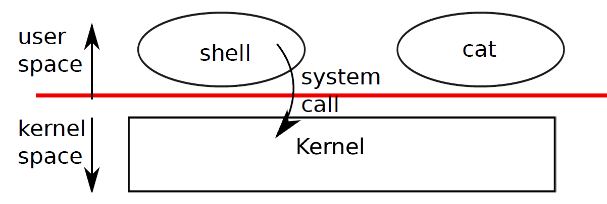

Chapter 0
The job of an operating system is to share a computer among multiple programs and to provide a more useful set of services than the hardware alone supports. The operating system manages and abstracts the low-level hardware, so that, for example, a word processor need not concern itself with which type of disk hardware is being used. It also multiplexes the hardware, allowing many programs to share the computer and run (or appear to run) at the same time. Finally, operating systems provide controlled ways for programs to interact, so that they can share data or work together.
An operating system provides services to user programs through an interface. Designing a good interface turns out to be difficult. On the one hand, we would like the interface to be simple and narrow because that makes it easier to get the implementation right. On the other hand, we may be tempted to offer many sophisticated features to applications. The trick in resolving this tension is to design interfaces that rely on a few mechanisms that can be combined to provide much generality.
This book uses a single operating system as a concrete example to illustrate operating system concepts. That operating system, xv6, provides the basic interfaces introduced by Ken Thompson and Dennis Ritchie’s Unix operating system, as well as mimicking Unix’s internal design. Unix provides a narrow interface whose mechanisms combine well, offering a surprising degree of generality. This interface has been so successful that modern operating systems—BSD, Linux, Mac OS X, Solaris, and even, to a lesser extent, Microsoft Windows—have Unix-like interfaces. Understanding xv6 is a good start toward understanding any of these systems and many others.
As shown in Figure 0-1, xv6 takes the traditional form of a kernel, a special program that provides services to running programs. Each running program, called a process, has memory containing instructions, data, and a stack. The instructions implement the program’s computation. The data are the variables on which the computation acts. The stack organizes the program’s procedure calls.
When a process needs to invoke a kernel service, it invokes a procedure call in the operating system interface. Such a procedure is called a system call. The system call enters the kernel; the kernel performs the service and returns. Thus a process alternates between executing in user space and kernel space.
The kernel uses the CPU’s hardware protection mechanisms to ensure that each process executing in user space can access only its own memory. The kernel executes with the hardware privileges required to implement these protections; user programs execute without those privileges. When a user program invokes a system call, the hardware raises the privilege level and starts executing a pre-arranged function in the kernel.
The collection of system calls that a kernel provides is the interface that user programs see. The xv6 kernel provides a subset of the services and system calls that Unix kernels traditionally offer. Figure 0-2 lists all xv6’s system calls.
The rest of this chapter outlines xv6’s services—processes, memory, file descriptors, pipes, and file system—and illustrates them with code snippets and discussions of how the shell uses them. The shell’s use of system calls illustrates how carefully they have been designed.
The shell is an ordinary program that reads commands from the user and executes them, and is the primary user interface to traditional Unix-like systems. The fact that the shell is a user program, not part of the kernel, illustrates the power of the system call interface: there is nothing special about the shell. It also means that the shell is easy to replace; as a result, modern Unix systems have a variety of shells to choose from, each with its own user interface and scripting features. The xv6 shell is a simple implementation of the essence of the Unix Bourne shell. Its implementation can be found at line (8350).
An xv6 process consists of user-space memory (instructions, data, and stack) and per-process state private to the kernel. Xv6 can time-share processes: it transparently switches the available CPUs among the set of processes waiting to execute. When a process is not executing, xv6 saves its CPU registers, restoring them when it next runs the process. The kernel associates a process identifier, or pid, with each process.
Figure 0-1. A kernel and two user processes.
A process may create a new process using the fork system call. Fork creates a new process, called the child process, with exactly the same memory contents as the calling process, called the parent process. Fork returns in both the parent and the child. In the parent, fork returns the child’s pid; in the child, it returns zero. For example, consider the following program fragment:>
int pid = fork();
if(pid > 0){ printf("parent: child=%d\n", pid);
pid = wait();
printf("child %d is done\n", pid);
}
else if(pid == 0){
printf("child: exiting\n");
exit();
}
else {
printf("fork error\n");
}
The exit system call causes the calling process to stop executing and to release resources such as memory and open files. The wait system call returns the pid of an exited child of the current process; if none of the caller’s children has exited, wait waits for one to do so. In the example, the output lines
System call Description
fork() Create process
exit() Terminate current process wait() Wait for a child process to exit kill(pid) Terminate process pid getpid() Return current process’s id
sleep(n) Sleep for n seconds
exec(filename, *argv) Load a file and execute it
sbrk(n) Grow process’s memory by n bytes
open(filename, flags) Open a file; flags indicate read/write read(fd, buf, n) Read n byes from an open file into buf write(fd, buf, n) Write n bytes to an open file
close(fd) Release open file fd dup(fd) Duplicate fd
pipe(p) Create a pipe and return fd’s in p chdir(dirname) Change the current directory
mkdir(dirname) Create a new directory mknod(name, major, minor) Create a device file
fstat(fd) Return info about an open file link(f1, f2) Create another name (f2) for the file f1
unlink(filename) Remove a file
Figure 0-2. Xv6 system calls
parent: child=1234 child: exiting
might come out in either order, depending on whether the parent or child gets to its printf call first. After the child exits the parent’s wait returns, causing the parent to print
parent: child 1234 is done
Note that the parent and child were executing with different memory and different registers: changing a variable in one does not affect the other.
The exec system call replaces the calling process’s memory with a new memory image loaded from a file stored in the file system. The file must have a particular format, which specifies which part of the file holds instructions, which part is data, at which instruction to start, etc. xv6 uses the ELF format, which Chapter 2 discusses in more detail. When exec succeeds, it does not return to the calling program; instead, the instructions loaded from the file start executing at the entry point declared in the ELF header. Exec takes two arguments: the name of the file containing the executable and an array of string arguments. For example:
char *argv[3];
argv[0] = "echo"; argv[1] = "hello"; argv[2] = 0; exec("/bin/echo", argv); printf("exec error\n");
This fragment replaces the calling program with an instance of the program /bin/echo running with the argument list echo hello. Most programs ignore the first argument, which is conventionally the name of the program.
The xv6 shell uses the above calls to run programs on behalf of users. The main structure of the shell is simple; see main (8501). The main loop reads the input on the command line using getcmd. Then it calls fork, which creates a copy of the shell process. The parent shell calls wait, while the child process runs the command. For example, if the user had typed ‘‘echo hello’’ at the prompt, runcmd would have been called with ‘‘echo hello’’ as the argument. runcmd (8406) runs the actual command. For ‘‘echo hello’’, it would call exec (8426). If exec succeeds then the child will execute instructions from echo instead of runcmd. At some point echo will call exit, which will cause the parent to return from wait in main (8501). You might wonder why fork and exec are not combined in a single call; we will see later that separate calls for creating a process and loading a program is a clever design.
Xv6 allocates most user-space memory implicitly: fork allocates the memory required for the child’s copy of the parent’s memory, and exec allocates enough memory to hold the executable file. A process that needs more memory at run-time (perhaps for malloc) can call sbrk(n) to grow its data memory by n bytes; sbrk returns the location of the new memory.
Xv6 does not provide a notion of users or of protecting one user from another; in Unix terms, all xv6 processes run as root.
A file descriptor is a small integer representing a kernel-managed object that a process may read from or write to. A process may obtain a file descriptor by opening a file, directory, or device, or by creating a pipe, or by duplicating an existing descriptor. For simplicity we’ll often refer to the object a file descriptor refers to as a ‘‘file’’; the file descriptor interface abstracts away the differences between files, pipes, and devices, making them all look like streams of bytes.
Internally, the xv6 kernel uses the file descriptor as an index into a per-process table, so that every process has a private space of file descriptors starting at zero. By convention, a process reads from file descriptor 0 (standard input), writes output to file descriptor 1 (standard output), and writes error messages to file descriptor 2 (standard error). As we will see, the shell exploits the convention to implement I/O redirection and pipelines. The shell ensures that it always has three file descriptors open (8507), which are by default file descriptors for the console.
The read and write system calls read bytes from and write bytes to open files named by file descriptors. The call read(fd, buf, n) reads at most n bytes from the file descriptor fd, copies them into buf, and returns the number of bytes read. Each file descriptor that refers to a file has an offset associated with it. Read reads data from the current file offset and then advances that offset by the number of bytes read: a subsequent read will return the bytes following the ones returned by the first read. When there are no more bytes to read, read returns zero to signal the end of the file.
The call write(fd, buf, n) writes n bytes from buf to the file descriptor fd and returns the number of bytes written. Fewer than n bytes are written only when an error occurs. Like read, write writes data at the current file offset and then advances that offset by the number of bytes written: each write picks up where the previous one left off.
The following program fragment (which forms the essence of cat) copies data from its standard input to its standard output. If an error occurs, it writes a message to the standard error.
char buf[512]; int n;
for(;;){ n = read(0, buf, sizeof buf); if(n == 0) break;
if(n < 0){ fprintf(2, "read error\n"); exit();
} if(write(1, buf, n) != n){ fprintf(2, "write error\n"); exit();
}
}
The important thing to note in the code fragment is that cat doesn’t know whether it is reading from a file, console, or a pipe. Similarly cat doesn’t know whether it is printing to a console, a file, or whatever. The use of file descriptors and the convention that file descriptor 0 is input and file descriptor 1 is output allows a simple implementation of cat.
The close system call releases a file descriptor, making it free for reuse by a future open, pipe, or dup system call (see below). A newly allocated file descriptor is always the lowest-numbered unused descriptor of the current process.
File descriptors and fork interact to make I/O redirection easy to implement. Fork copies the parent’s file descriptor table along with its memory, so that the child starts with exactly the same open files as the parent. The system call exec replaces the calling process’s memory but preserves its file table. This behavior allows the shell to implement I/O redirection by forking, reopening chosen file descriptors, and then execing the new program. Here is a simplified version of the code a shell runs for the command cat <input.txt:
char *argv[2];
argv[0] = "cat"; argv[1] = 0; if(fork() == 0) { close(0); open("input.txt", O_RDONLY); exec("cat", argv);
}
After the child closes file descriptor 0, open is guaranteed to use that file descriptor for the newly opened input.txt: 0 will be the smallest available file descriptor. Cat then executes with file descriptor 0 (standard input) referring to input.txt.
The code for I/O redirection in the xv6 shell works in exactly this way (8430). Recall that at this point in the code the shell has already forked the child shell and that runcmd will call exec to load the new program. Now it should be clear why it is a good idea that fork and exec are separate calls. This separation allows the shell to fix up the child process before the child runs the intended program.
Although fork copies the file descriptor table, each underlying file offset is shared between parent and child. Consider this example:
if(fork() == 0) { write(1, "hello ", 6); exit();
} else { wait(); write(1, "world\n", 6);
}
At the end of this fragment, the file attached to file descriptor 1 will contain the data hello world. The write in the parent (which, thanks to wait, runs only after the child is done) picks up where the child’s write left off. This behavior helps produce sequential output from sequences of shell commands, like (echo hello; echo world)
>output.txt.
The dup system call duplicates an existing file descriptor, returning a new one that refers to the same underlying I/O object. Both file descriptors share an offset, just as the file descriptors duplicated by fork do. This is another way to write hello world into a file:
fd = dup(1); write(1, "hello ", 6); write(fd, "world\n", 6);
Two file descriptors share an offset if they were derived from the same original file descriptor by a sequence of fork and dup calls. Otherwise file descriptors do not share offsets, even if they resulted from open calls for the same file. Dup allows shells to implement commands like this: ls existing-file non-existing-file > tmp1 2>&1. The 2>&1 tells the shell to give the command a file descriptor 2 that is a duplicate of descriptor 1. Both the name of the existing file and the error message for the non-existing file will show up in the file tmp1. The xv6 shell doesn’t support I/O redirection for the error file descriptor, but now you know how to implement it.
File descriptors are a powerful abstraction, because they hide the details of what they are connected to: a process writing to file descriptor 1 may be writing to a file, to a device like the console, or to a pipe.
A pipe is a small kernel buffer exposed to processes as a pair of file descriptors, one for reading and one for writing. Writing data to one end of the pipe makes that data available for reading from the other end of the pipe. Pipes provide a way for processes to communicate.
The following example code runs the program wc with standard input connected to the read end of a pipe.
int p[2]; char *argv[2];
argv[0] = "wc"; argv[1] = 0;
pipe(p); if(fork() == 0) { close(0); dup(p[0]); close(p[0]); close(p[1]); exec("/bin/wc", argv);
} else { write(p[1], "hello world\n", 12); close(p[0]); close(p[1]);
}
The program calls pipe, which creates a new pipe and records the read and write file descriptors in the array p. After fork, both parent and child have file descriptors referring to the pipe. The child dups the read end onto file descriptor 0, closes the file descriptors in p, and execs wc. When wc reads from its standard input, it reads from the pipe. The parent writes to the write end of the pipe and then closes both of its file descriptors.
If no data is available, a read on a pipe waits for either data to be written or all file descriptors referring to the write end to be closed; in the latter case, read will return 0, just as if the end of a data file had been reached. The fact that read blocks until it is impossible for new data to arrive is one reason that it’s important for the child to close the write end of the pipe before executing wc above: if one of wc’s file descriptors referred to the write end of the pipe, wc would never see end-of-file.
The xv6 shell implements pipelines such as grep fork sh.c | wc -l in a manner similar to the above code (8450). The child process creates a pipe to connect the left end of the pipeline with the right end. Then it calls runcmd for the left end of the pipeline and runcmd for the right end, and waits for the left and the right ends to finish, by calling wait twice. The right end of the pipeline may be a command that itself includes a pipe (e.g., a | b | c), which itself forks two new child processes (one for b and one for c). Thus, the shell may create a tree of processes. The leaves of this tree are commands and the interior nodes are processes that wait until the left and right children complete. In principle, you could have the interior nodes run the left end of a pipeline, but doing so correctly would complicate the implementation. Pipes may seem no more powerful than temporary files: the pipeline
echo hello world | wc
could be implemented without pipes as
echo hello world >/tmp/xyz; wc </tmp/xyz
There are at least three key differences between pipes and temporary files. First, pipes automatically clean themselves up; with the file redirection, a shell would have to be careful to remove /tmp/xyz when done. Second, pipes can pass arbitrarily long streams of data, while file redirection requires enough free space on disk to store all the data. Third, pipes allow for synchronization: two processes can use a pair of pipes to send messages back and forth to each other, with each read blocking its calling process until the other process has sent data with write.
The xv6 file system provides data files, which are uninterpreted byte arrays, and directories, which contain named references to data files and other directories. Xv6 implements directories as a special kind of file. The directories form a tree, starting at a special directory called the root. A path like /a/b/c refers to the file or directory named c inside the directory named b inside the directory named a in the root directory /. Paths that don’t begin with / are evaluated relative to the calling process’s current directory, which can be changed with the chdir system call. Both these code fragments open the same file (assuming all the directories involved exist):
chdir("/a"); chdir("b"); open("c", O_RDONLY); open("/a/b/c", O_RDONLY);
The first fragment changes the process’s current directory to /a/b; the second neither refers to nor modifies the process’s current directory.
There are multiple system calls to create a new file or directory: mkdir creates a new directory, open with the O_CREATE flag creates a new data file, and mknod creates a new device file. This example illustrates all three:
mkdir("/dir"); fd = open("/dir/file", O_CREATE|O_WRONLY); close(fd);
mknod("/console", 1, 1);
Mknod creates a file in the file system, but the file has no contents. Instead, the file’s metadata marks it as a device file and records the major and minor device numbers (the two arguments to mknod), which uniquely identify a kernel device. When a process later opens the file, the kernel diverts read and write system calls to the kernel device implementation instead of passing them to the file system.
fstat retrieves information about the object a file descriptor refers to. It fills in a
struct stat, defined in stat.h as:
#define T_DIR 1 // Directory
#define T_FILE 2 // File #define T_DEV 3 // Device
struct stat { short type; // Type of file int dev; // File system’s disk device uint ino; // Inode number short nlink; // Number of links to file uint size; // Size of file in bytes
};
A file’s name is distinct from the file itself; the same underlying file, called an inode, can have multiple names, called links. The link system call creates another file system name referring to the same inode as an existing file. This fragment creates a new file named both a and b.
open("a", O_CREATE|O_WRONLY); link("a", "b");
Reading from or writing to a is the same as reading from or writing to b. Each inode is identified by a unique inode number. After the code sequence above, it is possible to determine that a and b refer to the same underlying contents by inspecting the result of fstat: both will return the same inode number (ino), and the nlink count will be set to 2.
The unlink system call removes a name from the file system. The file’s inode and the disk space holding its content are only freed when the file’s link count is zero and no file descriptors refer to it. Thus adding
unlink("a");
to the last code sequence leaves the inode and file content accessible as b. Furthermore,
fd = open("/tmp/xyz", O_CREATE|O_RDWR); unlink("/tmp/xyz");
is an idiomatic way to create a temporary inode that will be cleaned up when the process closes fd or exits.
Xv6 commands for file system operations are implemented as user-level programs such as mkdir, ln, rm, etc. This design allows anyone to extend the shell with new user commands. In hind-sight this plan seems obvious, but other systems designed at the time of Unix often built such commands into the shell (and built the shell into the kernel).
One exception is cd, which is built into the shell (8516). cd must change the current working directory of the shell itself. If cd were run as a regular command, then the shell would fork a child process, the child process would run cd, and cd would change the child’s working directory. The parent’s (i.e., the shell’s) working directory would not change.
Unix’s combination of the ‘‘standard’’ file descriptors, pipes, and convenient shell syntax for operations on them was a major advance in writing general-purpose reusable programs. The idea sparked a whole culture of ‘‘software tools’’ that was responsible for much of Unix’s power and popularity, and the shell was the first so-called ‘‘scripting language.’’ The Unix system call interface persists today in systems like BSD, Linux, and Mac OS X.
Modern kernels provide many more system calls, and many more kinds of kernel services, than xv6. For the most part, modern Unix-derived operating systems have not followed the early Unix model of exposing devices as special files, like the console device file discussed above. The authors of Unix went on to build Plan 9, which applied the ‘‘resources are files’’ concept to modern facilities, representing networks, graphics, and other resources as files or file trees.
The file system abstraction has been a powerful idea, most recently applied to network resources in the form of the World Wide Web. Even so, there are other models for operating system interfaces. Multics, a predecessor of Unix, abstracted file storage in a way that made it look like memory, producing a very different flavor of interface. The complexity of the Multics design had a direct influence on the designers of Unix, who tried to build something simpler.
This book examines how xv6 implements its Unix-like interface, but the ideas and concepts apply to more than just Unix. Any operating system must multiplex processes onto the underlying hardware, isolate processes from each other, and provide mechanisms for controlled inter-process communication. After studying xv6, you should be able to look at other, more complex operating systems and see the concepts underlying xv6 in those systems as well.
Chapter 1
A key requirement for an operating system is to support several activities. For example, using the system call interface described in chapter 0 a process can start new processes using fork. The operating system must arrange that these processes can time-share the resources of the computer. For example, a process may start more new processes than there are processors in the computer, yet all processes must be able to make some progress. In addition, the operating system must arrange for isolation between the processes. That is, if one process has a bug and fails, it shouldn’t impact processes that don’t have a dependency on the failed process. Complete isolation, however, is too strong, since it should be possible for processes to interact; for example, it is convenient for users to combine processes to perform complex tasks (e.g., by using pipes). Thus, the implementation of an operating system must achieve three requirements: multiplexing, isolation, and interaction.
This chapter provides an overview of how operating systems are organized to achieve these 3 requirements. It turns out there are many ways to do so, but this text focuses on mainstream designs centered around a monolithic kernel, which is used by many Unix operating systems. This chapter illustrates this organization by tracing the first process that is created when xv6 starts running. In doing so, the text provides a glimpse of the implementation of all major abstractions that xv6 provides, how they interact, and how the three requirements of multiplexing, isolation, and interaction are met. Most of xv6 avoids special-casing the first process, and instead reuses code that xv6 must provide for standard operation. Subsequent chapters will explore each abstraction in more detail.
Xv6 runs on Intel 80386 or later (‘‘x86’’) processors on a PC platform, and much of its low-level functionality (for example, its process implementation) is x86-specific. This book assumes the reader has done a bit of machine-level programming on some architecture, and will introduce x86-specific ideas as they come up. Appendix A briefly outlines the PC platform.
The first question one might ask when encountering an operating system is why have it at all? That is, one could implement the system calls in Figure 0-2 as a library, with which applications link. In this plan, each application could even have its own library, perhaps tailored to its needs. In this plan, the application can directly interact with the hardware resources and use those resources in the best way for the application (e.g., to achieve high performance or predictable performance). Some tiny operating systems for embedded devices or real-time systems are organized in this way.
The downside of this approach is that applications are free to use the library, which means they can also not use it. If they don’t use the operating system library, then the operating system cannot enforce time sharing. It must rely on the application to behave properly and, for example, periodically give up a processor so that another application can run. Such a cooperative time-sharing scheme is maybe OK for a system where all applications trust each other, but doesn’t provide strong isolation if applications are mutually distrustful.
To achieve strong isolation a helpful approach is to disallow applications to have direct access to the hardware resources, but instead to abstract the resources into services. For example, applications interact with a file system only through open, read, write, and close system calls, instead of read and writing raw disk sectors. This provides the application with the convenience of pathnames, and it allows the operating system (as the implementor of the interface) to manage the disk.
Similarly, in Unix applications run as processes using fork, allowing the operating system to save and restore registers on behalf of the application when switching between different processes, so that application don’t have to be aware of process switching. Furthermore, it allows the operating system to forcefully switch an application out of a processor, if the application, for example, is an end-less loop.
As another example, Unix processes use exec to build up their memory image, instead of directly interacting with physical memory. This allows the operating system to decide where to place a process in memory and move things around if there is a shortage of memory, and provides applications with the convenience of a file system to store their images.
To support controled interaction between applications, Unix applications can use only file descriptors, instead of to make up some sharing convention of their own (e.g., reserving a piece of physical memory). Unix file descriptors abstract all the sharing details away, hiding from the application if the interaction is happening with the terminal, file system, or pipes, yet allows the operating system to control the interaction. For example, if one application fails, it can shut down the communication channel.
As you can see, the system call interface in Figure 0-2 is carefully designed to provide programmer convenience but also for the implementation of the interface to enforce strong isolation. The Unix interface is not the only way to abstract resources, but it has proven to be a very good one.
To provide strong isolation between the software that uses system calls and the software that implements the system calls, we need a hard boundary between applications and the operating system. If the application makes a mistake, we don’t want the operating system to fail. Instead, the operating system should be able to clean up the application and continue running other applications. This strong isolation means that application shouldn’t be able to write over data structures maintained by the operating system, shouldn’t be able to overwrite instructions of the operating system, etc.
To provide for such strong isolation processors provide hardware support. For example, the x86 processor, like many other processors, has two modes in which the processor executes instructions: kernel mode and user mode. In kernel mode the processor is allowed to execute privileged instructions. For example, read and writing to the disk (or any other I/O device) is a privileged instruction. If an application in user mode attempts to execute a privileged instruction, then the processor doesn’t execute the instruction, but switches to kernel mode so that the software in kernel mode can clean up the application, because it did something it shouldn’t be doing. Figure 0-1 in Chapter 0 illustrates this organization. Applications can execute only usermode instructions (e.g., adding numbers, etc.) and is said to be running in user space, while the software in kernel mode can execute also privileged instructions and is said to be running in kernel space. The software running in kernel space (or in kernel mode) is called the kernel.
If a user-mode application must read or write to disk, it must transition to the kernel to do so, because the application itself can not execute I/O instructions. Processors provide a special instruction that switches the processor from user mode to kernel mode and enters the kernel at an entry point specified by the kernel. (The x86 processor provides the int instruction for this purpose.) Once the processor has switched to kernel mode, the kernel can then validate the arguments of the system call, decide whether the application is allowed to perform the requested operation, and then deny it or execute it. It is important that the kernel sets the entry point when transition to kernel mode; if the application could decide the kernel entry point, a malicious application could enter the kernel at a point where the validation of arguments etc. is skipped.
A key design question for an operating system is what part of the operating system should run in kernel mode. A simple answer is that the kernel interface is the system call interface. That is, fork, exec, open, close, read, write, etc. are all kernel calls. This choice means that the complete implementation of the operating system runs in kernel mode. This kernel organization is called a monolithic kernel.
In this organization the complete operating system runs with full hardware privilege. This organization is convenient because the OS designer doesn’t have to decide which part of the operating system doesn’t need full hardware privilege. Furthermore, it easy for different parts of the operating system to cooperate. For example, an operating system might have a buffer cache that can be shared both by the file system and the virtual memory system.
A downside of the monolithic organization is that the interfaces between different parts of the operating system are often complex (as we will see in the rest of this text), and therefore it is easy for an operating system developer to make a mistake. In a monolithic kernel, a mistake is fatal, because an error in kernel mode will often result in the kernel to fail. If the kernel fails, the computer stops working, and thus all applications fail too. The computer must reboot to start again.
To reduce the risk of mistakes in the kernel, OS designers can make the lines of code that run in kernel mode small. Most of the operating system doesn’t need access to privileged instructions, and can thus run as ordinary user-level applications, with which applications interact with through messages. This kernel organization is called a microkernel.
Figure 1-1 illustrates this microkernel design. In the figure, the file system runs as a user-level application. Operating systems that services that run as ordinary user programs are called servers. To allow application to interact with the file server, the kernel provides a minimal mechanism to send messages from one user-mode application to another. For example, if an application like the shell wants to read or write a file, it sends a message to the file server and waits for a response.
In a microkernel, the kernel interface consists of a few low-level functions for starting applications, performing I/O, sending messages to applications, etc. This organization allows the kernel to be implemented with a few lines of code, since it doesn’t do much, as most functionality of the operating system is implemented by user-level servers.
In the real-world, one can find both monolithic kernels and microkernels. For example, Linux is mostly implemented as a monolithic kernel, although some OS functions run as user-level servers (e.g., the windowing system). Xv6 is implemented as a monolithic kernel, following most Unix operating systems. Thus, in xv6, the kernel interface corresponds to the operating system interface, and the kernel implements the complete operating system. Since xv6 doesn’t provide many functions, its kernel is smaller than some microkernels.
Microkernel
shell
File server
user
space
kernel
space
Send message
Figure 1-1
. A mkernel with a
file system server
Microkernel
shell
File server
user
space
kernel
space
Send message
Figure 1-1
. A mkernel with a
file system server
The unit of isolation in xv6 (as in other Unix operating systems) is a process. The process abstraction prevents one process from wrecking or spying on another process’ memory, CPU, file descriptors, etc. It also prevents a process from wrecking the kernel itself (i.e., from preventing the kernel to enforce isolation). The kernel must implement the process abstraction with care because a buggy or malicious application may trick the kernel or hardware in doing something bad (e.g., circumventing enforced isolation). The mechanisms used by the kernel to implement processes include user/kernel mode flag, address spaces, and time slicing of threads, which this subsection provides an overview of.
To be able to enforce isolation, a process is an abstraction that provides the illusion to a program that it has its own abstract machine. A process provides a program with what appears to be a private memory system, or address space, which other processes cannot read or write. A process also provides the program with what appears to be its own CPU to execute the program’s instructions.
Xv6 uses page tables (which are implemented by hardware) to give each process its own address space. The x86 page table translates (or ‘‘maps’’) a virtual address (the address that an x86 instruction manipulates) to a physical address (an address that the processor chip sends to main memory).
Xv6 maintains a separate page table for each process that defines that process’s address space. As illustrated in Figure 1-2, an address space includes the process’s user memory starting at virtual address zero. Instructions come first, followed by global variables, then the stack, and finally a ‘‘heap’’ area (for malloc) that the process can expand as needed.
Each process’s address space maps the kernel’s instructions and data as well as the user program’s memory. When a process invokes a system call, the system call executes in the kernel mappings of the process’s address space. This arrangement exists so that the kernel’s system call code can directly refer to user memory. In order to leave room for user memory to grow, xv6’s address spaces map the kernel at high addresses, starting at 0x80100000.
0
0x80000000
0
xFFFFFFFF
0x80100000
text and data
free memory
BIOS
user text
and data
user stack
heap
kernel
user
Figure 1-2
. Layout of a virtual address space
0
0x80000000
0
xFFFFFFFF
0x80100000
text and data
free memory
BIOS
user text
and data
user stack
heap
kernel
user
Figure 1-2
. Layout of a virtual address space
The xv6 kernel maintains many pieces of state for each process, which it gathers into a struct proc (2353). A process’s most important pieces of kernel state are its page table, its kernel stack, and its run state. We’ll use the notation p->xxx to refer to elements of the proc structure.
Each process has a thread of execution (or thread for short) that executes the process’s instructions. A thread can be suspended and later resumed. To switch transparently between processes, the kernel suspends the currently running thread and resumes another process’s thread. Much of the state of a thread (local variables, function call return addresses) is stored on the thread’s stacks. Each process has two stacks: a user stack and a kernel stack (p->kstack). When the process is executing user instructions, only its user stack is in use, and its kernel stack is empty. When the process enters the kernel (for a system call or interrupt), the kernel code executes on the process’s kernel stack; while a process is in the kernel, its user stack still contains saved data, but isn’t actively used. A process’s thread alternates between actively using its user stack and its kernel stack. The kernel stack is separate (and protected from user code) so that the kernel can execute even if a process has wrecked its user stack.
When a process makes a system call, the processor switches to the kernel stack, raises the hardware privilege level, and starts executing the kernel instructions that implement the system call. When the system call completes, the kernel returns to user space: the hardware lowers its privilege level, switches back to the user stack, and resumes executing user instructions just after the system call instruction. A process’s thread can ‘‘block’’ in the kernel to wait for I/O, and resume where it left off when the I/O has finished.
p->state indicates whether the process is allocated, ready to run, running, wait-
ing for I/O, or exiting.
p->pgdir holds the process’s page table, in the format that the x86 hardware ex-
pects. xv6 causes the paging hardware to use a process’s p->pgdir when executing that process. A process’s page table also serves as the record of the addresses of the physical pages allocated to store the process’s memory.
To make the xv6 organization more concrete, we look how the kernel creates the first address space (for itself), how the kernel creates and starts the first process, and the first system call that that process makes. By tracing these operations we see in detail how xv6 provides strong isolation for processes. The first step in providing strong isolation is setting up the kernel to run in its own address space.
When a PC powers on, it initializes itself and then loads a boot loader from disk into memory and executes it. Appendix B explains the details. Xv6’s boot loader loads the xv6 kernel from disk and executes it starting at entry (1040). The x86 paging hardware is not enabled when the kernel starts; virtual addresses map directly to physical addresses.
The boot loader loads the xv6 kernel into memory at physical address 0x100000. The reason it doesn’t load the kernel at 0x80100000, where the kernel expects to find its instructions and data, is that there may not be any physical memory at such a high address on a small machine. The reason it places the kernel at 0x100000 rather than 0x0 is because the address range 0xa0000:0x100000 contains I/O devices.
To allow the rest of the kernel to run, entry sets up a page table that maps virtual addresses starting at 0x80000000 (called KERNBASE (0207)) to physical addresses starting at 0x0 (see Figure 1-2). Setting up two ranges of virtual addresses that map to the same physical memory range is a common use of page tables, and we will see more examples like this one.
The entry page table is defined in main.c (1311). We look at the details of page tables in Chapter 2, but the short story is that entry 0 maps virtual addresses
Virtual address space
0
0x80000000
0
xFFFFFFFF
0x80100000
text and data
BIOS
Physical memory
Top physical
memory
kernel text
and data
4
Mbyte
0
BIOS
text and data
0
0x80000000
0
xFFFFFFFF
0x80100000
text and data
BIOS
Physical memory
Top physical
memory
kernel text
and data
4
Mbyte
0
BIOS
text and data
Figure 1-3. Layout of a virtual address space
0:0x400000 to physical addresses 0:0x400000. This mapping is required as long as entry is executing at low addresses, but will eventually be removed.
Entry 512 maps virtual addresses KERNBASE:KERNBASE+0x400000 to physical addresses 0:0x400000. This entry will be used by the kernel after entry has finished; it maps the high virtual addresses at which the kernel expects to find its instructions and data to the low physical addresses where the boot loader loaded them. This mapping restricts the kernel instructions and data to 4 Mbytes.
Returning to entry, it loads the physical address of entrypgdir into control register %cr3. The paging hardware must know the physical address of entrypgdir, because it doesn’t know how to translate virtual addresses yet; it doesn’t have a page table yet. The symbol entrypgdir refers to an address in high memory, and the macro V2P_WO (0220) subtracts KERNBASE in order to find the physical address. To enable the paging hardware, xv6 sets the flag CR0_PG in the control register %cr0.
The processor is still executing instructions at low addresses after paging is enabled, which works since entrypgdir maps low addresses. If xv6 had omitted entry 0 from entrypgdir, the computer would have crashed when trying to execute the instruction after the one that enabled paging.
Now entry needs to transfer to the kernel’s C code, and run it in high memory. First it makes the stack pointer, %esp, point to memory to be used as a stack (1054). All symbols have high addresses, including stack, so the stack will still be valid even when the low mappings are removed. Finally entry jumps to main, which is also a high address. The indirect jump is needed because the assembler would otherwise generate a PC-relative direct jump, which would execute the low-memory version of main. Main cannot return, since the there’s no return PC on the stack. Now the kernel is running in high addresses in the function main (1217).
Now the kernel runs within its own address space, we look at how the kernel creates user-level processes and ensures strong isolation between the kernel and user-level processes, and between processes themselves.
After main initializes several devices and subsystems, it creates the first process by calling userinit (1239). Userinit’s first action is to call allocproc. The job of allocproc (2455) is to allocate a slot (a struct proc) in the process table and to initialize the parts of the process’s state required for its kernel thread to execute. Allocproc is called for each new process, while userinit is called only for the very first process.
Allocproc scans the proc table for a slot with state UNUSED (2461-2463). When it finds an unused slot, allocproc sets the state to EMBRYO to mark it as used and gives the process a unique pid (2451-2469). Next, it tries to allocate a kernel stack for the process’s kernel thread. If the memory allocation fails, allocproc changes the state back to UNUSED and returns zero to signal failure.
p->kstack
p->context
p->tf
esp
eip
edi
trapret
eip
...
edi
empty
)
(
...
...
top of new stack
address forkret will return to
Figure 1-4
. A new kernel stack.
p->kstack
p->context
p->tf
esp
eip
edi
trapret
eip
...
edi
empty
)
(
...
...
top of new stack
address forkret will return to
Figure 1-4
. A new kernel stack.
Now allocproc must set up the new process’s kernel stack. allocproc is written so that it can be used by fork as well as when creating the first process. allocproc sets up the new process with a specially prepared kernel stack and set of kernel registers that cause it to ‘‘return’’ to user space when it first runs. The layout of the prepared kernel stack will be as shown in Figure 1-4. allocproc does part of this work by setting up return program counter values that will cause the new process’s kernel thread to first execute in forkret and then in trapret (2486-2491). The kernel thread will start executing with register contents copied from p->context. Thus setting p>context->eip to forkret will cause the kernel thread to execute at the start of forkret (2783). This function will return to whatever address is at the bottom of the stack. The context switch code (2958) sets the stack pointer to point just beyond the end of p->context. allocproc places p->context on the stack, and puts a pointer to trapret just above it; that is where forkret will return. trapret restores user registers from values stored at the top of the kernel stack and jumps into the process (3277). This setup is the same for ordinary fork and for creating the first process, though in the latter case the process will start executing at user-space location zero rather than at a return from fork.
As we will see in Chapter 3, the way that control transfers from user software to the kernel is via an interrupt mechanism, which is used by system calls, interrupts, and exceptions. Whenever control transfers into the kernel while a process is running, the hardware and xv6 trap entry code save user registers on the process’s kernel stack. userinit writes values at the top of the new stack that look just like those that would be there if the process had entered the kernel via an interrupt (2514-2520), so that the ordinary code for returning from the kernel back to the process’s user code will work. These values are a struct trapframe which stores the user registers. Now the new process’s kernel stack is completely prepared as shown in Figure 1-4.
The first process is going to execute a small program (initcode.S; (8200)). The process needs physical memory in which to store this program, the program needs to be copied to that memory, and the process needs a page table that refers to that memory.
userinit calls setupkvm (1837) to create a page table for the process with (at first) mappings only for memory that the kernel uses. We will study this function in detail in Chapter 2, but at a high level setupkvm and userinit create an address space as shown Figure 1-2.
The initial contents of the first process’s memory are the compiled form of initcode.S; as part of the kernel build process, the linker embeds that binary in the kernel and defines two special symbols, _binary_initcode_start and _binary_initcode_size, indicating the location and size of the binary. Userinit copies that binary into the new process’s memory by calling inituvm, which allocates one page of physical memory, maps virtual address zero to that memory, and copies the binary to that page (1903).
Then userinit sets up the trap frame (0602) with the initial user mode state: the %cs register contains a segment selector for the SEG_UCODE segment running at privilege level DPL_USER (i.e., user mode not kernel mode), and similarly %ds, %es, and %ss use SEG_UDATA with privilege DPL_USER. The %eflags FL_IF bit is set to allow hardware interrupts; we will reexamine this in Chapter 3.
The stack pointer %esp is set to the process’s largest valid virtual address, p->sz. The instruction pointer is set to the entry point for the initcode, address 0.
The function userinit sets p->name to initcode mainly for debugging. Setting p->cwd sets the process’s current working directory; we will examine namei in detail in Chapter 6.
Once the process is initialized, userinit marks it available for scheduling by setting p->state to RUNNABLE.
Now that the first process’s state is prepared, it is time to run it. After main calls userinit, mpmain calls scheduler to start running processes (1267). Scheduler (2708) looks for a process with p->state set to RUNNABLE, and there’s only one: initproc. It sets the per-cpu variable proc to the process it found and calls switchuvm to tell the hardware to start using the target process’s page table (1868). Changing page tables while executing in the kernel works because setupkvm causes all processes’ page tables to have identical mappings for kernel code and data. switchuvm also sets up a task state segment SEG_TSS that instructs the hardware to execute system calls and interrupts on the process’s kernel stack. We will re-examine the task state segment in Chapter 3.
scheduler now sets p->state to RUNNING and calls swtch (2958) to perform a context switch to the target process’s kernel thread. swtch saves the current registers and loads the saved registers of the target kernel thread (proc->context) into the x86 hardware registers, including the stack pointer and instruction pointer. The current context is not a process but rather a special per-cpu scheduler context, so scheduler tells swtch to save the current hardware registers in per-cpu storage (cpu->scheduler) rather than in any process’s kernel thread context. We’ll examine swtch in more detail in Chapter 5. The final ret instruction (2977) pops the target process’s %eip from the stack, finishing the context switch. Now the processor is running on the kernel stack of process p.
Allocproc set initproc’s p->context->eip to forkret, so the ret starts executing forkret. On the first invocation (that is this one), forkret (2783) runs initialization functions that cannot be run from main because they must be run in the context of a regular process with its own kernel stack. Then, forkret returns. Allocproc arranged that the top word on the stack after p->context is popped off would be trapret, so now trapret begins executing, with %esp set to p->tf. Trapret (3277) uses pop instructions to restore registers from the trap frame (0602) just as swtch did with the kernel context: popal restores the general registers, then the popl instructions restore %gs, %fs, %es, and %ds. The addl skips over the two fields trapno and errcode. Finally, the iret instruction pops %cs, %eip, %flags, %esp, and %ss from the stack. The contents of the trap frame have been transferred to the CPU state, so the processor continues at the %eip specified in the trap frame. For initproc, that means virtual address zero, the first instruction of initcode.S.
At this point, %eip holds zero and %esp holds 4096. These are virtual addresses in the process’s address space. The processor’s paging hardware translates them into physical addresses. allocuvm set up the process’s page table so that virtual address zero refers to the physical memory allocated for this process, and set a flag (PTE_U) that tells the paging hardware to allow user code to access that memory. The fact that userinit (2514) set up the low bits of %cs to run the process’s user code at CPL=3 means that the user code can only use pages with PTE_U set, and cannot modify sensitive hardware registers such as %cr3. So the process is constrained to using only its own memory.
Now we have seen how the kernel provides strong isolation for processes, let’s see how a user-level process can enter back into the kernel to ask for services that it cannot perform itself.
The first action of initcode.S is to invoke the exec system call. As we saw in Chapter 0, exec replaces the memory and registers of the current process with a new program, but it leaves the file descriptors, process id, and parent process unchanged.
Initcode.S (8208) begins by pushing three values on the stack—$argv, $init, and $0—and then sets %eax to SYS_exec and executes int T_SYSCALL: it is asking the kernel to run the exec system call. If all goes well, exec never returns: it starts running the program named by $init, which is a pointer to the NUL-terminated string /init (8221-8223). If the exec fails and does return, initcode loops calling the exit system call, which definitely should not return (8215-8219).
The arguments to the exec system call are $init and $argv. The final zero makes this hand-written system call look like the ordinary system calls, as we will see in Chapter 3. As before, this setup avoids special-casing the first process (in this case, its first system call), and instead reuses code that xv6 must provide for standard operation.
Chapter 2 will cover the implementation of exec in detail, but at a high level it will replace initcode with the /init binary, loaded out of the file system. Now initcode (8200) is done, and the process will run /init instead. Init (8310) creates a new console device file if needed and then opens it as file descriptors 0, 1, and 2. Then it loops, starting a console shell, handles orphaned zombies until the shell exits, and repeats. The system is up.
Most operating systems have adopted the process concept, and most processes look similar to xv6’s. A real operating system would find free proc structures with an explicit free list in constant time instead of the linear-time search in allocproc; xv6 uses the linear scan (the first of many) for simplicity.
xv6’s address space layout has the defect that it cannot make use of more than 2 GB of physical RAM. It’s possible to fix this, though the best plan would be to switch to a machine with 64-bit addresses.